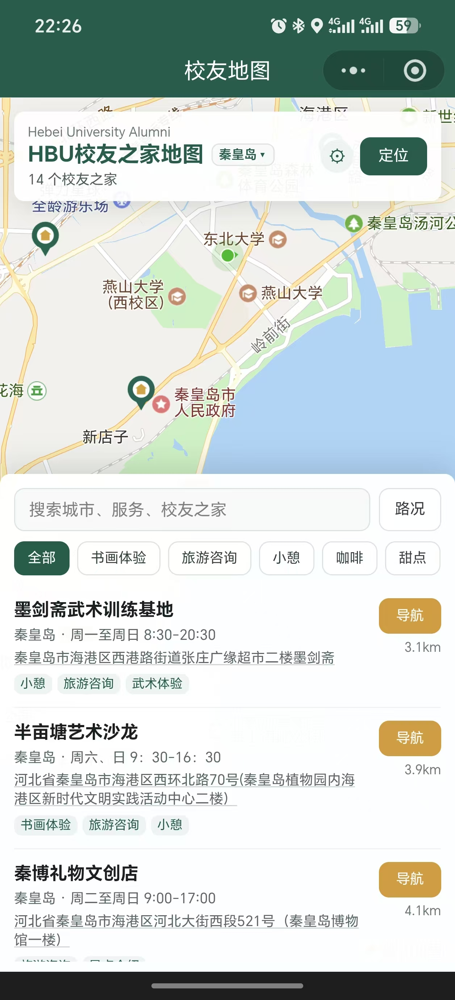

河北大学校友地图
河大校友，走到哪都有自己人
15 家校友之家已上线 · 有图有介绍 · 等你来串门
毕业后，我们散落在不同的城市，忙着自己的生活。
但总有一些时刻，想找老同学坐一坐，想回母校看看，想在外地遇到一个“自己人”。
现在，有一张属于河大校友自己的地图上线了。15 家校友之家已经在地图上亮灯，每一家都有自己的照片和介绍，打开就能看到。

主页面就是一张校友之家地图：顶部显示当前城市和校友之家数量，中间是地图点位，下方可以搜索、筛选服务标签，点开任意一家即可查看照片、介绍、联系方式并一键导航。
秦皇岛 · 14 家
艺术、咖啡、住宿、教育、汽车、房产，跟着地图逛港城


保定 · 1 家
在保定扎根的校友之家，买房置业先找自己人

这些校友之家大多是校友自己经营的事业，也为校友准备了专属优惠和暖心服务。校友之家不只是一个商业点位，更是一份“走到哪都有自己人”的底气。
打开微信，关注「hbu港城之家」公众号
点击公众号底部菜单栏的「校友地图」
进入地图主页面，点击任意点位查看介绍、联系方式，一键导航
进入小程序后，你还可以：
· 按城市、服务类型搜索筛选
· 查看每家校友之家的照片、视频和详细介绍
· 一键拨打电话、复制微信和地址
· 直接发起地图导航
地图正在成长，我们诚邀更多校友经营或运营的场所入驻。无论是咖啡馆、餐厅、书店、工作室、培训机构、医疗机构，还是酒店、民宿、活动场地、服务机构，都欢迎加入。
入驻条件：
1. 经营场所由河北大学校友开设或运营
2. 愿意为校友提供优惠、活动场地或服务
3. 诚信经营，无不良记录
入驻流程：
1. 联系管理员 — 提供以下信息
2. 管理员录入 — 在后台添加校友之家信息
3. 上线展示 — 信息录入后立即在地图上展示
需要提供的信息：
名称：校友之家名称，如“XX校友之家”
所在地区：省、市
地址：详细地址
位置：管理员在地图上标记位置
联系人：负责人姓名
电话：联系电话
微信：微信号
服务时间：营业时间
照片：店内照片（最多 10 张）
视频：介绍视频（可选）
服务标签：如“餐饮折扣”“活动场地”“住宿优惠”等
描述：详细介绍
管理员联系方式：
请联系校友会获取当前管理员的微信，或提供你的微信 openid 给管理员添加权限。
openid 获取方式：小程序首页右上角 ⚙ → 复制你的微信身份(openid) → 发给管理员
入驻后，你的位置、照片、视频和联系方式会展示在「河北大学校友地图」上，让更多校友找到你、认识你、支持你。
愿每一座城市，都有一盏为河大校友亮着的灯
打开「hbu港城之家」公众号 → 点击「校友地图」
河北大学校友地图 · 校友之家，越聚越多